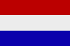

|
Länderinformationen Niederlande
1. Das Wichtigste auf einen Blick2. Sehens- und Hörenswertes
3. Politik & Gesellschaft
4. Schmeckenswertes
5. Medien
6. Reisetipps
1. Wissenswertes
|  | Hier
haben wir die wichtigsten Zahlen und Fakten zu den Niederlanden
und der niederländischen Sprache zusammengetragen. |
Die Niederlande sind als direkte Nachbarn Deutschlands, keine gänzlich unbekannten Gefilde für uns. Aber was wissen wir wirklich über das Land, dass fälschlicherweise oft als Holland bezeichnet wird und das vor allem als Land der Tulpen, des Gouda und der Legalisierung weicher Drogen bekannt ist?
Lesen Sie hier weiter, wenn Sie mehr Wissenswertes, Schmeckenswertes und Kurioses über Nederland, wie die Niederländer selbst ihr Land (im Singular!) bezeichnen, erfahren möchten.
Wir haben hier in einer ganz persönlichen Auswahl viele interessante und vielleicht weniger bekannte Informationen rund um das Thema "Niederlande" für Sie zusammengestellt.
 Zunächst
einmal Grundsätzliches...
Zunächst
einmal Grundsätzliches...
...denn das Land, um das es hier gehen soll, muss erst namentlich richtig definiert werden, bevor es genauer betrachtet wird. Wir sprechen hier nämlich von den Niederlanden, nicht von Holland!
Fälschlicherweise wird das Land unsere westlichen Nachbarn - übrigens nicht nur von uns Deutschen - häufig als Holland bezeichnet bzw. diese beiden Länderbezeichnungen werden immer wieder synonym verwendet. Holland ist aber in Wirklichkeit nur ein Teil der Niederlande. Genauer gesagt ist es eine wirtschaftlich immer noch recht erfolgreiche Provinz, die nordwestlich zwischen Nordsee und IJsselmeer liegt.
Der Ursprung dieses landläufigen Fehlers geht zurück bis zum Ende des 16. Jahrhunderts. Damals entstand die Republik der Sieben Vereinigten Niederlande, deren einflussreichste Provinz Holland war. Doch nicht nur geschichtliche Gründe trugen dazu bei, den Namen Holland für die Niederlande zu verbreiten. Verstärkt wurde dies zudem noch vor wenigen Jahren. In den 1970er und 80er Jahren nämlich wollten holländische Agrarexporteure in das negative Image ihrer Treibhausprodukte bekämpfen und warben deshalb mit Frau Antje als Werbeträgerin und ihrem Spruch Käse und Gemüse - Qualität aus Holland für ihre Region. Somit war der Name Holland in aller Munde, wurde jedoch fälschlicherweise als Länderbezeichnung für die ganzen Niederlande verwendet.
Teilweise wird dieser landläufige Irrtum aber auch von den Niederländern selbst verbreitet, da sie Holland auch als ironische Selbstbezeichnung verwenden. Die holländischen Fußballfans haben z.B.den Schlachtruf Hup, Holland, hup! , den Sie vielleicht kennen werden.
 Das
wirkliche Holland
Das
wirkliche Holland
Aus gegebenen Anlass soll nun einmal die eigentliche Provinz Holland kurz vorgestellt werden. Diese nordwestliche Provinz wird im Westen durch die Nordsee und im Osten durch das IJsselmeer begrenzt. In ihrem Westen, an der Nordsee, sind hauptsächlich Dünen entlang der Küste. Landeinwärts wiederum findet man flache Polder (oder Koog), also künstlich angelegte, ringförmige Eindeichungen, die der Landgewinnung dienen. Diese sind bitter nötig, denn wie auch große Teile der Niederlande selbst liegt ein Großteil dieser Provinz unterhalb des Meeresspiegel. Seit Mitte des 19. Jahrhunderts ist sie zweigeteilt in die Teile Nordholland mit der Hauptstadt Haarlem und Südholland mit dem Regierungssitz Den Haag.
Die Provinz ist immer noch sehr wichtig. In ihr liegen die Großstädte Rotterdam, die Stadt mit dem zweitgrößten Hafen der Welt, und die Haupt- und Kulturstadt Amsterdam.
Weitere interessante Fakten zu Land und Leuten werden Sie weiter unten in unserem Länderbericht noch einmal finden, aber jetzt erst einmal ein Einblick in die Sprache der Niederlande.
 Die
niederländische Sprache - Nederlandse taal
Die
niederländische Sprache - Nederlandse taal
Genau wie das Land selbst wird auch die Sprache häufig falsch bezeichnet, auch sie heißt weder Holländisch noch - wie sie manchmal auch bezeichnet wird - Flämisch. Ersteres ist aus den oben genannten Gründen falsch und bezeichnet im Grunde nur die nördlichen Dialekte des Landes. Zweiteres ist die Bezeichnung der Niederländischen Dialekte, die man im Süden der Niederlande und im belgischen Landesteil Flandern spricht. Korrekter- und naheliegenderweise heißt die offizielle niederländische Sprache also Niederländisch, oder Nederlandse taal, wie man im Land selbst sagt.
Die niederländische Schrift- und Hochsprache wird etwas anders genannt, ihr Name ist Algemeen Beschaafd Nederlands, was soviel heißt wie "allgemeines kultiviertes Niederländisch".
Wie in Deutschland spricht man in den Niederlanden ebenfalls regionale Dialekte. In der südwestlichen Hälfte des Landes werden niederfränkische, im Südosten ripuarische und im Nordosten niedersächsische Mundarten gesprochen. Diese werden im Dialektkontinuum staatsübergreifend auch in Deutschland gesprochen, genauso wie niederfränkische und ripuarische Dialekte in Belgien.
Rund 25 Millionen sprechen Niederländisch (und Flämisch) als Muttersprache, womit diese Sprache die drittmeisten Sprecher der germanischen Sprachen nach Englisch und Deutsch besitzt.
Niederländisch ist nicht nur die Nationalsprache der Niederlande und des flämischen Teils Belgiens (Flandern), sondern wird auch in den angrenzenden Gebieten Deutschlands, in Luxemburg und im französischen Département Nord gesprochen. In letzterem leben rund zehntausend Menschen, welche die westflämische Variante des Niederländischen sprechen.
In der Provinz Fryslân (Friesland) ist Friesisch Verwaltungssprache und zweite Amtssprache.
Zudem ist Niederländisch die offizielle Amtssprache der Republik Suriname und der niederländischen Antillen.
Der englischen Sprache sind die meisten Niederländer mächtig.
 Flämisch
als niederländischer Dialekt
Flämisch
als niederländischer Dialekt
Im nördlichen Teil Belgiens, in Flandern, spricht man die flämischen Dialekte des Niederländischen. Geschrieben hingegen wird in derselben Schrift wie die Niederländer, also in der niederländischen Standardsprache, welche dort Amts- und Schriftsprache ist. Als Hoch- und Schriftsprache ist Niederländisch also identisch mit dem Flämischen.
Während es also falsch ist, wenn beispielsweise ein Schweizer oder Deutscher die Sprache "Niederländisch" als "Flämisch" bezeichnet, ist es das nicht, wenn ein Flame dies tut. Denn für die Flamen in Belgien drückt die Bezeichnung ihrer Sprache als "Niederländisch" eine Nähe zu Volk und Staat aus, zu welchen sie sich nicht zugehörig fühlen möchten. Wenn Sie also von Flämisch sprechen, ist eigentlich die niederländische Sprache gemeint.
Afrikaans
- eigene Sprache und ursprünglicher
Dialekt des Niederländischen
Dialekt des Niederländischen
Ein weiterer Dialekt des Niederländischen, das Afrikaans oder Kapholländisch, war in Südafrika die Sprache der Nachkommen niederländischer Kolonialisten, der Buren.
1925 ersetzte Afrikaans das Niederländische als Amtssprache der südafrikanischen Union. Afrikaans wird heute von 6 Millionen Menschen in Südafrika als Muttersprache gesprochen, was etwa 13 Prozent der Bevölkerung ausmacht.
Obwohl Afrikaans von Struktur und Wortschatz her eigentlich ein niederländischer Dialekt ist, gilt es inzwischen als eigene Sprache, da der deutsche, afrikanische und englische Wortschatz großen Einfluss hatten und es sich stark veränderte. Diese Veränderungen waren im Wesentlichen Vereinfachungen, Verminderungen des Formenschatzes und Ausnahmebeseitigungen. Dies zeigte sich vor allem in der Verkürzung von Wörtern. So wurde beispielsweise aus dem Niederländischen Wort wagen (zu deutsch Wagen) das Wort wa. Des Weiteren fielen Konjugationsendungen mit der Zeit fast vollständig weg.
Die Verständigung zwischen Niederländern und Afrikaans-Sprechern ist aber trotzdem immer noch relativ problemlos, da die Ähnlichkeiten der beiden Sprachen immer noch überwiegen, wenn auch weiterhin zu erwarten ist, dass sich Afrikaans vom Holländischen weg entwickeln wird.
Niederländisch
- eine germanische Sprache
Die germanischen Sprachen bilden eine Unterfamilie der Indogermanischen bzw. der Indoeuropäischen Sprachen. Die heute noch existenten germanischen Sprachen lassen sich einteilen in west- und nordgermanische Sprachen.
Das Niederländische gehört gemeinsam mit Englisch, Deutsch, Friesisch, Afrikaans und Jiddisch zum westgermanischen Zweig. Deshalb zunächst ein paar Informationen zu den germanischen Sprachen.
Die Verwandtschaft der germanischen Sprachen ist unbestritten, sie sind einander bereits ähnlich und werden sich, je weiter man in die Vergangenheit zurück geht, immer ähnlicher. Deshalb ist auch der Gedanke einer gemeinsamen, germanischen Ursprache, dem Urgermanischen, keinesfalls abwegig. . Dieses ist zwar nicht belegbar, kann jedoch z.B. durch umfassende Vergleiche der Wortstämme und Grammatiken erschlossen werden.
Die heutige Sprachforschung ist auf dem Stand, dass man die germanischen Sprachen in die folgenden fünf Gruppen einteilen kann: Die Nordgermanen, die Nordseegermanen, die Weser-Rhein-Germanen, die Elbgermanen und die Oder-Weichsel-Germanen. Alle diese sind nach ihrem frühest bekannten Wohngebiet benannt.
Die heutigen noch existierenden germanischen Sprachen lassen sich folgendermaßen zu diesen ursprünglichen Stämmen zuordnen: Die nordgermanischen Sprachen Dänisch, Färöisch, Norwegisch, Schwedisch und Isländisch lassen sich auf die Dialekte der früheren Nordgermanen zurückführen. Das heutige Englisch entstand aus den Dialekten der Angeln und Sachsen, in Resten auch das noch existente Friesisch.
Die beiden Schwestersprachen Niederländisch und Deutsch hingegen lassen sich nicht so eindeutig von einer der erwähnten fünf Stammesgruppen herleiten. Zur ihrem Entstehen trugen vielmehr die zu den Nordseegermanen gehörenden Sachsen, die Alemannen und die auf die Elbgermanen zurückgehenden Baiern bei, sowie die Franken (auf Weser-Rhein-Germanen zurückgehend) und die Thüringer. Diese beiden Letztgenannten lassen sich jedoch nur schwer voneinander abgrenzen.
Entstehung
der Niederländischen Sprache
Die Anfänge des Niederländischen als eigene Sprache sind nicht sehr gut belegt. Erst im 12. Jahrhundert taucht es in schriftlichen Dokumenten und schließlich in einer ab diesem Zeitpunkt aufblühenden, eigenen Literatur auf.
Die Ursprünge des heutigen Niederländisch liegen in einem Zweig des Niederdeutschen. Aus diesem entwickelte sich Altniederländisch und schließlich Niederländisch, was lange Zeit ein deutscher Dialekt war. Im Mittelalter dann hatten oberdeutsche Dialekte stärkeren Einfluss auf die deutsche Hochsprache, woraufhin sich das Deutsche vom Mittelniederländischen entfernte.
Im 16.Jahrhundert schließlich emanzipierte sich das Mittelniederländische vom Deutschen durch die Entwicklung einer eigenen Schriftsprache; dabei wechselten sich die Dialekte Flanderns, Brabants und Hollands in ihrem Einfluss ab, je nach ihrem jeweiligen wirtschaftlichen und politischen Einfluss. Denn die Entwicklung der Sprache hing eng zusammen mit dem Schicksal der Region, in welcher sie gesprochen wurde.
Mit der Gründung der „Republik der Vereinigten Niederlande“ 1648 etablierte sich Niederländisch endgültig als Staats- und Schriftsprache. In diesem neuen Staat sprach man mit Ausnahme kleiner friesischer Sprachinseln ausschließlich Niederländisch. Deshalb war es naheliegend, dass Niederländisch auch zur Staatssprache ernannt und sich zur Schriftsprache neben dem Deutschen etablierte.
Die eigene Schriftsprache verbreitete sich im 17. Jahrhundert vor allem in Norden der
heutigen Niederlande und fand dort allgemeine Anerkennung. Aus dieser Zeit stammt die bereits erwähnte Verbindung mit dem Deutschen durch eine Kette niederländischer und niederdeutscher Dialekte.
Flandern
und Flämisch
Im Süden hingegen sah es bezüglich der niederländischen Sprache anders aus. Dort wurde das Niederländische (Flämisch) seit der Unabhängigkeit von 1579 oft vom Französischen zurückgedrängt, vor allem seit der französischen Besatzung von 1794. Deshalb konnte die niederländische Hochsprache nie richtig Fuß fassen. Auch die kurzzeitige Vereinigung von Süden und Norden zum "Königreich der Vereinigten Niederlande“ ab 1815 änderte daran nichts. Sie hatte auch nur 15 Jahre Bestand, danach wurde im Süden das französisch dominierte Belgien gegründet.
Erst im 19. Jahrhundert kam es zum Erwachen des flämischen Nationalismus und somit zu einem Wiederaufleben der flämischen Sprachkultur. Seitdem ist die flämische (niederländische) Sprache ein Symbol der nationalen Selbstbehauptung der Flamen in Belgien.
Damit war der sprachliche und kulturelle Konflikt aber nicht zu Ende, denn mit dem neuen Königreich Belgien waren die erwähnten Gegensätze keinesfalls auf die zwei neuen Territorien aufgeteilt. Seitdem kämpften in Belgien die katholischen Flamen jahrhundertelang, bis sie 1922 ihre Sprache als die zweite Amtssprache Belgiens durchsetzen konnten, so dass diese dem Französischen gleichgestellt war. Dies ist auch der Grund, warum sich das Niederländische und das Flämische als zweite Amtssprache Belgiens kaum unterscheiden, da es sich ja um die gleiche Sprache handelt.
Auch heute besteht ja immer noch der Gegensatz zwischen Flamen und Wallonen und droht immer wieder, die politische Einheit Belgiens zu zerstören.
 Niederländisch
und Deutsch
Niederländisch
und Deutsch
Niederländisch und Deutsch sind eng verwandt und einander sehr ähnlich, sie sind quasi "Sprachschwestern".
Eine unabhängige niederländische Sprache neben ihrer deutschen Schwester existiert erst seit wenigen Jahrhunderten. Dies geschah erst mit der lange ersehnten und erstrebten Unabhängigkeit der Niederlande durch den Westfälischen Frieden 1648. Dadurch nämlich wurde die gesprochene Sprache, die bis dahin eine niederdeutsche Mundart war, zur Schrift- und Staatssprache erhoben.
Zusammen mit dem Deutschen macht Niederländisch die kleinste Untergruppe der deutschen bzw. germanischen Sprachgattung aus. Das Niederländische ist die wichtigste germanische Nachbarsprache des Deutschen.
Dennoch sind die beiden Sprachen immer noch durch mehrere verwandte niederdeutsche und niederländische Dialekte miteinander verbunden, die einen kontinuierlichen Übergang zwischen den Sprachschwestern herstellen. Dies ist auch mit ein Grund, warum die Variationsbreite niederländischer Dialekte heutzutage relativ groß ist.
Aufgrund der großen Verwandtschaft ist auch der niederländische Grundwortschatz vollständig germanisch. Der in Belgien gesprochene flämische Dialekt jedoch enthält aufgrund der jahrhundertelangen Vorherrschaft Frankreichs viele Lehnwörter aus dem Französischen. Diese gehören jedoch nicht zum hochsprachlichen Standard und werden auch nicht immer und überall verstanden. Wie so viele andere Sprachen kann sich auch Niederländisch dem Einfluss moderner englischer Begriffe aufgrund der Internationalisierung dieser Sprache nicht entziehen.
Die Aussprache des Niederländischen ist der deutschen sehr ähnlich und sehr variationsreich. Im Wesentlichen werden nur aus dem Deutschen bekannte Vokale und Konsonanten verwendet, obwohl vor allem bei den Vokalen einige eher nordisch klingende Varianten existieren.
Doch trotz der nahen Verwandtschaft ist mündliche Verständigung zwischen deutschen und niederländischen Muttersprachlern höchstens fragmentarisch möglich, sofern nicht beispielsweise der Deutsche einen auf deutscher Seite gesprochenen, niederländischen Dialekt versteht. Im Schriftbild hingegen verkehrt es sich anders, hier springt die Verwandtschaft direkt ins Auge, was auf beiden Seiten ein oftmals weit reichendes Textverstehen ermöglicht.
 Wortschatz
des Niederländischen
Wortschatz
des Niederländischen
Aufgrund der nahen Verwandtschaft und relativ späten Wegentwicklung des Niederländischen vom Deutschen gibt es viele Wörter, die Ihnen bekannt vorkommen werden und die teilweise auch die gleiche Bedeutung besitzen wie im Deutschen. Die deutsche Übersetzung der Wörter burgemeester oder verdrag brauchen wir Ihnen deshalb wahrscheinlich nicht mitliefern.
Doch Vorsicht, wie so oft gibt es auch hier die sogenannten "falschen Freunde", also sehr ähnliche Wörter mit unterschiedlicher Bedeutung. So heißt aandacht nicht, wie man meinen würde, Andacht, sondern Aufmerksamkeit, und openbaar nicht offenbar, sondern öffentlich.
Viele niederländische Wörter sind auch im Deutschen veraltet, wie z.B. gedrag , also Betragen für Benehmen oder verbazen für sich wundern oder erstaunt sein.
Des Weiteren hat das Niederländische viele Wörter aus anderen Sprachen entlehnt, von denen die Bedeutendsten seit Beginn des 18. Jahrhunderts aus der französischen Sprache übernommen wurden. Die ursprünglichen niederländischen Wörter blieben dabei meist gleichberechtigt erhalten. Beispiele hierfür sind kwestie (franz.: question) und vraag für Frage; oder succes (franz.: succès) und gevolg für Erfolg.
Einige Wörter mit französischem Ursprung sind auch vollkommen an die Phonologie des Niederländischen angepasst worden. So geht beispielsweise das Wort krant („Zeitung“) auf das französische courant zurück, das Wort vel („Blatt“) auf feuille, oder das Wort klant („Kunde“) auf client.
Wie das Deutsche hat auch hat das Niederländische viele Anglizismen in die eigene Sprache aufgenommen, vor allem in den Bereichen Technik, Wissenschaft, Informatik und im Jugendjargon. Da man im Niederländischen meist so schreibt, wie man spricht, weicht die Schreibweise der Anglizismen häufig von der Englischen ab.
Doch nicht nur die englische, auch die deutsche Sprache hatte Einfluss auf Niederländisch. Aufgrund der nahen Verwandtschaft wurden teilweise ganze Phrasen, Redewendungen und Sprichwörter ins Niederländische übertragen und an dessen lautliche Gegebenheiten angepasst. So gibt es beispielsweise anstalten maken oder tijdschrift (=Zeitschrift) auch im niederländischen Sprachgebrauch. Auch Wörter wie kotsen, überhaupt, streber kennt und benutzt man nicht nur in Deutschland.
Rechtschreibung
Die niederländische Schriftsprache trägt Besonderheiten in der Aussprache nicht Rechnung, weshalb auch Niederländer und belgische Flamen eine gemeinsame und standardisierte Schriftsprache benutzen. Nichtsdestotrotz herrscht eine große Übereinstimmung zwischen Schrift und Aussprache, wenn man die jeweiligen Regeln beachtet.
Im Niederländischen schreibt man also meistens so, wie man spricht. Auch Fremdwörter werden dementsprechend an die Aussprache angeglichen, z.B: exclusief oder muziek.
Im Gegensatz zum Deutschen werden alle Wortarten klein geschrieben, nur das erste Wort eines Satzes schreibt man groß. Von dieser Regel gibt es jedoch einige Ausnahmen, nämlich Eigennamen von Personen, Orten, Ländern sowie von Eigennamen abgeleitete Adjektive.
Geschichte der
Niederlande
Von den Römern
über die Habsburger zur unabhängigen Republik
Seit 50
v. Chr. eroberten die Römer das Gebiet der heutigen Niederlande
und gründeten dort
Städte; eine römischen Provinz entstand. Nach dem Untergang
des Römischen Reiches folgten Friesen, Sachsen und Franken, und
unruhige Zeiten brachen an.
Danach gehörte das Gebiet der heutigen Niederlande zum Fränkischen Reich Karls des Großen. Im Jahre 843 dann gehörten sie zu Lothringen, im 15. Jahrhundert dann zu Burgund und Habsburg. 1555 schließlich ging das Gebiet an Spanien über.
Der Niederländische Staat in ungefähr der Form, wie wir ihn heute kennen, existiert seit dem Westfälischen Frieden von 1648. Zuvor bestand dieses Gebiet aus den lose miteinander verbundenen Provinzen Holland, Flandern, Brabant und weiteren, die zu den Erblanden der spanischen Monarchie der Habsburger gehörten. Aufgrund eines äußerst regen Handels entstand in den Provinzen ein sehr selbstbewusstes und wohlhabendes Bürgertum, welches bereits am Anfang des 16. Jahrhunderts seine Rechte und Freiheiten gegenüber Kaiser Karl V. zum Ausdruck brachte und einforderte. Die Provinzen waren von den Habsburgern hoch geschätzt aufgrund ihres hohen Steueraufkommens, brachten aber auch Probleme mit sich, man musste sich gegen innere und äußere Feinde behaupten. Zum einen gab es innenpolitische Unabhängigkeitsbestrebungen der Niederländer selbst, zum anderen war auch Frankreich sehr an den attraktiven Provinzen interessiert.
Die Habsburger bemühten sich, das Land zentral zu verwalten und Steuern und Gesetze zu vereinheitlichen. Dies sorgte allerdings in der Bevölkerung für Aufstände, hinzu kamen religiöse Konflikte durch die Reformation. Vor allem in den nördlichen Provinzen konvertierten Teile der Bevölkerung zum Protestantismus, später auch zum Calvinismus. Da jedoch Karl V. und sein Sohn und Nachfolger, Philipp II. von Spanien, beide strenggläubige Katholiken waren, ließen sie die Protestanten verfolgen. Sie versuchten sie zu rekonvertieren, da das katholische Herrschaftshaus Angst hatte, wegen der religiösen Differenzen ihre Erblande zu verlieren. Diese Befürchtungen waren berechtigt, denn schließlich entstand aus dieser Konfliktkonstellation heraus auch 1568 der niederländische Freiheitskampf gegen die Besatzungsmacht.
Philipp II. erklärte den Calvinismus zur Ketzerei. Daraufhin rebellierten die nördlichen Provinzen unter Anführung des ehemaligen Statthalters des Königs, Wilhelm von Oranien (später dann Moritz von Oranien). Mit seinem Versuch, Brabant zu besetzen, begann 1568 der Achtzigjährige Krieg.
Im Jahre 1579 vereinigten sich die nördlichen Provinzen zur Utrechter Union und sagten sich 1581 mit der Gründung der „Republik der Sieben Vereinigten Niederlande“ vom Hause Habsburg und damit von Spanien los. Die katholischen Südprovinzen, das heutige Belgien und Luxemburg, blieben bei Spanien. Der bei der Gründung der Utrechter Union geschlossene Vertrag räumte den nördlichen Provinzen unter anderem das Recht zur Kontrolle der Schifffahrt auf dem Niederrhein ein, was sich als sehr wichtig für deren weitere wirtschaftliche Entwicklung herausstellte. 1585 eroberten die Spanier Antwerpen, woraufhin die Niederländer die Schelde sperrten und Antwerpen damit den Zugang zur Nordsee nahmen. So waren die Weichen für den Siegeszug Amsterdams als künftigen Handelszentrums gegen Antwerpen gestellt.
De
gouden eeuw - Das
Goldene Zeitalter der
Niederlande als Republik
Bereits
vor der Gründung der „Vereinigten Republik der
Niederlande“ waren die Grundlagen für den späteren
Erfolg und Reichtum der niederländischen Wirtschaft gelegt.
Schon seit dem frühen 15. Jahrhundert betrieb die nördliche
Provinz Holland vor allem von Amsterdam seinen Ostseehandel. Dies
machte die Provinzen trotz der spanischen Belagerung zu einer
blühenden Handelsnation. Durch die Verwendung kleinerer und
schnellerer Schiffe, mit weniger Besatzung als die Konkurrenz, wurden
die Händler aus Amsterdam zu den flexibelsten ihrer Zeit. Somit
begann die Blüte der heutigen Hauptstadt Amsterdam und der
Niederlande bereits gegen Ende des 16. Jahrhunderts.
Als Spanien 1580 Portugal einnahm, zwang dies die heutigen nördlichen Niederlande dazu, selbst nach Indien zu fahren. Von Amsterdam aus unternahm man erste Fahrten und erzielte gleich große Erfolge. Deshalb schmiedete man bald überall Pläne, weitere Segelschiffe nach Indien zu schicken. Den ersten Einzelinitiativen folgte 1602 die Gründung der VOC, der Vereenigde Oost-Indische Compagnie, die als erste Aktiengesellschaft der Welt zu mehr als der Hälfte von Amsterdam finanziert wurde. Aufgrund ihres großen Erfolges war Amsterdam am Ende des 17. Jahrhunderts die reichste Stadt Europas. Die Lagerhäuser und Häfen waren gefüllt mit wertvollen Gewürzen, Stoffen und anderen Kostbarkeiten aus Indien und dem Pazifikraum. Gewürze waren zu dieser Zeit so unglaublich kostbar , dass sie mit Gold aufgewogen wurden!
Das Land begann also den Überseehandel in großem Stile zu betreiben und betrieb außer dem Gewürzhandel die Waljagd und allgemein Handel mit Edelmetallen, Gewürzen und Sklaven. Durch Kolonie-Gründungen in Brasilien, Südafrika, der Karibik und Nordamerika vergrößerte es seine Fläche. Nach und nach gehörten immer mehr überseeische Gebiete zum seinem Kolonialbesitz. Dies alles geschah trotz bzw. auch aufgrund des teilweise parallel verlaufenden 80-jährigen Krieges.So begann der Aufstieg des relativ kleinen Landes zur großen europäischen Handelsmacht und brachte ihm einen unermesslichen Reichtum ein. Dadurch erlangten die Niederlande eine hervorragende Stellung, die sie unter den anderen Kolonialmächten Europas bis zur französischen Revolution behaupten konnten. Diese Zeit wird auch als de gouden eeuw, als Goldenes Zeitalter bezeichnet.
Erst nach 80 Jahren Krieg gelang es der Republik jedoch, politische Freiheit zu erringen. Diese wurde im bereits erwähnten Westfälischen Frieden in Münster und Osnabrück am 15. Mai 1648 durch die Habsburger Monarchie anerkannt. Dies war die eigentliche Geburtsstunde und somit Unabhängigkeit der Vereinigten Provinzen der Niederlande, da man seit dem Westfälischen Frieden von den Niederlanden als eigenständigem Staat sprechen kann. Seither bestehen sie als souveräner Staat mit wechselnden politischen Systemen. Die Antillen wurden außerdem eine niederländische Kolonie.
Niederländische
Kolonien
Der
Aufstieg der Niederlande zur führenden See- und Handelsmacht im
17. Jahrhundert ist eng verknüpft mit der Schaffung eines
niederländischen Kolonialreiches. Um das Jahr 1600 erreichte
eine Expedition niederländischer Kaufleute die Insel Java,
welches die erste von vielen Entdeckungsreisen war. Im Zuge dessen
wurden zahlreiche Handelsstützpunkte in Amerika, Südostasien
und Amerika erworben bzw. gegründet. Seinen Höhepunkt
erreichte das niederländische Handelsimperium um 1650. Zu dieser
Zeit wurde etwa die Hälfte des gesamten Welthandels von den
Niederländern umgeschlagen.
Die Unabhängigkeitskriege gegen Spanien legten zum Großteil den Grundstein für den niederländischen Kolonialismus. Eigentlich war das Land zunächst mehr an europäischen Handels- und Geldgeschäften orientiert. Es musste sich jedoch zu Beginn des 17. Jahrhunderts aufgrund der Sperrung spanischer und portugiesischer Häfen für niederländische Schiffe global orientieren. Doch im Gegensatz zu Spanien und Portugal begann die Kolonialisation der Niederlande mit der Einführung von Handelsgesellschaften, von denen die größte die bereits erwähnte Niederländische Ostindien-Kompanie (VOC) war.
Im Jahre 1602 wurde die VOC von den Generalstaaten mit einem Handelsmonopol für alle Gebiete ausgestattet, die östlich des afrikanischen Kaps der guten Hoffnung und westlich der südamerikanischen Magellanstraße lagen. Zugleich erhielt sie eine Reihe souveräner Rechte. 1621 wurde ergänzend die Holländisch-Westindische Kompanie gegründet, deren Wirkungsgebiet ganz Amerika, Afrika und der dazwischen liegende Atlantik war. Sie gründete Kolonien in Nordamerika (Neu-Niederlande, das heutige New York), in Südamerika (Niederländisch-Guayana, der heutige Suriname) und auf den Karibischen Inseln (z.B. die niederländischen Antillen). Kurzzeitig brachte sie auch das portugiesische Brasilien in ihre Hand.
Als die Niederlande 1672 mit England und Frankreich gleichzeitig in einen Krieg gerieten und dadurch der Amsterdamer Hafen unerreichbar wurde für Handelsschiffe aus Indien, endete bald darauf die größte Blüte am Ende des 17. Jahrhunderts. Mit der Änderung der wirtschaftlichen Strukturen verlor Amsterdam seine Stellung als Welthandels-Umschlaghafen, wurde aber gleichzeitig als Geldmarkt immer wichtiger. Die Stadt schaffte es, das Finanzzentrum der damaligen Welt zu werden, und hatte die Stellung des Bankiers für europäische Fürsten. Diese führten kostspielige Kriege mit dem geliehenen Geld.
1815 verlor das Land viele seiner kolonialen Ansprüche an die Briten. Hier ist vor allem derjenige auf Niederländisch-Guayana erwähnenswert. Nach dem 2. Weltkrieg wurden dann Niederländisch-Ostindien (Indonesien, 1949) und Suriname (1975) unabhängig. Die letzte heute verbliebene Kolonie, das Überbleibsel eines ausgedehnten Handelsreiches, sind die Niederländischen Antillen. Die Insel Aruba löste sich 1986 von den Niederländischen Antillen. So gibt es im heutigen niederländischen Königreich drei gleichberechtigte Teile: Aruba, die niederländischen Antillen und das europäische Kernland der Niederlande. Aruba strebt seit 1986 nach einer vollständigen Unabhängigkeit, die Verhandlungen dazu sind jedoch inzwischen auf Eis gelegt.
Obwohl die Kolonien dem Land großen Reichtum bescherten, wurden im Gegenzug die kolonialisierten Länder ausgebeutet und unterdrückt. Diese Phase der niederländischen Geschichte lässt sich deshalb keineswegs nur positiv darstellen.
Von
der Batavischen Republik zur Erbmonarchie
Nach
Beendigung der Französischen Revolution wurden die Niederlande
1795 zu einem französischen Vasallenstaat, man nannte sie daher
nun Batavische Republik. Napoleon gründete dann ein neues
Königreich Holland, dass aus den heutigen Niederlanden und einem
Teil Deutschlands bestand und ernannte seinen Bruder Ludwig Bonaparte
zum Herrscher über das neue Land.
Erst
im Jahr 1813 konnten die Niederlande die Unabhängigkeit zurück
erlangen, die Republik wurde jedoch nicht wieder hergestellt. Der
Zeit entsprechend trat zwar 1814 eine Verfassung in Kraft, diese
legte jedoch als Staatsform eine Erbmonarchie mit dem Hause Oranien
fest. Wilhelm I. aus dem Hause Oranien war ab 1815 der erste König
der Vereinigten Niederlande (einschließlich des heutigen
Belgiens).
Die Region des heutigen Belgiens hat eine besonders schwierige Geschichte. Vor der Französischen Revolution gehörte die Region zu Österreich, während dessen wurde sie von Frankreich annektiert, und ab 1815 bildete sie zusammen mit den heutigen Niederlanden das Königreich der Vereinigten Niederlande. Dieser Zusammenschluss hatte jedoch keine lange Dauer, da ein großer konfessioneller Gegensatz zwischen dem südlichen katholischen Teil und dem protestantischen Norden bestand. Hinzu kam ein kultureller und sprachlicher Gegensatz zwischen dem niederländischen Norden und dem wallonischen, französisch sprechenden Süden.
Deshalb war es nicht verwunderlich, dass das künstliche Gebilde "Vereinigtes niederländisches Königreich" 1830 gesprengt wurde und das Königreich Belgien neben den Vereinigten Niederlanden entstand. Innere Konflikte hatten zur Abspaltung der südlichen Provinzen und zu deren Selbständigkeit als Königreich Belgien geführt.
Die neue niederländische Monarchie der Vereinigten Niederlande schifften sowohl innen- als auch außenpolitisch in ruhigeres Fahrwasser. Vor allem die liberalen Verfassungselemente wurden durch die Verfassungsreform des Jahres 1848 gestärkt. Nach außen hin versuchte das Land, einen neutralen Kurs zu verfolgen, was im Ersten Weltkrieg auch erfolgreich war.
Die
Niederlande während des 2. Weltkriegs unter deutscher Besatzung
Während
des Zweiten Weltkrieg gelang die außenpolitische Neutralität
der Niederlande nicht mehr. Deutsche Truppen besetzten die
Niederlande zwischen dem 10.5.1940 und 5.5.1945. Wie auch im
Deutschen Reich kam es spätestens ab 1941 zur Verfolgung und
Deportation von Juden, Sinti und Roma. Der sogenannte Februarstreik,
an dem viele Niederländer teilnahmen, wurde blutig
niedergeschlagen.
Alle Parteien wurden 1941 nach und nach verboten. Eigene Transit-, Internierungs- und Konzentrationslager wurden im Land gebaut, und von den zu Kriegsbeginn rund 180.000 Juden im Land lebten gegen Ende des Krieges nur noch 30.000. Prozentual starben in den Niederlanden viel mehr Juden als in anderen europäischen Ländern. Als bekanntestes jüdisches Schicksal darf wohl das des jüdischen Flüchtlingsmädchens Anne Frank aus Frankfurt gelten, deren Tagebuch über ihr verstecktes Leben in Amsterdam weltweit bekannt wurde.
Im letzten Kriegswinter litt ein Großteil der niederländischen Bevölkerung Hunger, weshalb dieser der Hongerwinter (Hungerwinter) genannt wird. Am 5. Mai 1945 kapitulierten die deutschen Soldaten bei Wageningen, kurz darauf folgte auch das Kriegsende in Europa.
Von
der Nachkriegszeit zur EU
Nach
dem Zweiten Weltkrieg gehörten außenpolitische Öffnungen
zur politischen Tagesordnung der Niederlande. Sie zählen zu den
Gründungsmitgliedern der Vereinten Nationen, der NATO (1949) und
der Europäischen Gemeinschaft für Kohle und Stahl (EGKS
1952), aus der später die Europäische Gemeinschaft/Union
hervorging. Vorläufer der EGKS war der Zusammenschluss der sog.
Benelux-Staaten, welchen die Niederlande zusammen mit Luxemburg und
Belgien zu Beginn der 1950er Jahre eingingen. Die Niederlande gehören
auch heute noch zu den aktivsten Förderern des Europagedankens.
Die Nachkriegszeit war außerdem bestimmt durch Unabhängigkeitsbestrebungen der niederländischen Kolonien. Dieser Prozess begann 1948 mit der Unabhängigkeit Indonesiens nach einem Kolonialkrieg seit Ende des 2. Weltkrieges. Daraufhin folgte 1962 West-Neuguinea. Der Suriname und die Niederländischen Antillen wurden 1954 gleichberechtigte Partner der Niederlande in einem so genannten Reichsverband. 1975 wurde der Suriname dann auch unabhängig.
 Einwohner
Einwohner
Die Niederlande haben rund 16.570.000 Einwohner (stand vom Juli 2007) und belegen damit den 59. Platz weltweit.
Pro Quadratkilometer macht das etwa 484 Einwohnern aus, womit das kleine Land im Westen Europas zu den am dichtesten besiedelten Staaten der Welt gehört. Nur zum Vergleich: Monaco besitzt derzeit etwa 16.923, Deutschland etwa 231 und Namibia 2,3 Einwohner pro Quadratkilometer.
Eine unnütze, aber interessante Information: Statistisch gesehen sind die Niederländer das längste oder größte Volk der Welt: Im Durchschnitt beträgt ihre Größe bei den Männern 1,83 m, bei den Frauen ganze 1,72 m.
Die Niederlande sind nicht nur das größte, sondern auch oder vor allem aufgrund ihrer Vergangenheit als Kolonialmacht ein sehr multikulturelles Volk. Menschen aus der ganzen Welt, nicht nur aus den europäischen Nachbarstaaten, sondern auch aus Marokko, der Türkei, aus den ehemaligen Kronkolonien Indonesien, Surinam und aus der Karibik leben hier.
Des Weiteren sind zwischen 5.000 und 10.000 Menschen den Sinti und Roma zugehörig, und es gibt ca. 30.000 so genannte woonwagenbewoners (häufig abschätzig als kampers bezeichnet, genannt, bevorzugte Eigenbezeichnung reizigers).
Fläche
Aufgrund
der hohen Bevölkerungsdichte ist es bei einer Einwohnerzahl von
16,5 Millionen nur nahe liegend, dass die Fläche der Niederlande
nicht allzu groß sein kann. Mit 41.526 km² sind die
Niederlande nur das 131-größte Land. Noch kleiner
erscheinen sie einem, wenn man bedenkt, dass hierbei bereits die
Fläche der Binnenmeere, die ca. 7.900 km² ausmacht, mit
eingerechnet sind.
Das Staatsgebiet besteht aus den Niederlanden selbst und den zahlreichen zugehörigen Inseln, den westfriesischen Inseln, einigen Inseln im Ijsselmeer, ehemaligen Inseln, die heute Teile von Poldern sind (Wieringen bzw. Wieringermeerpolder, Schokland bzw. Noordoostpolder und Urk bzw. Noordoostpolder), den Inseln der Provinz Zeeland (Noord-Beveland, Zuid-Beveland, Schouwen-Duiveland, St. Philipsland, Tholen und Walcheren) und schließlich noch den Inseln der Provinz Südholland (Goeree-Overflakkee und Tiengemeten). Hinzu kommen die niederländischen Überseegebiete, nämlich die niederländischen Antillen und Aruba.
Die (europäischen) Niederlande gliedern sich in zwölf Provinzen. Diese werden meist, nach den vier Himmelsrichtungen, in vier Gruppen untergliedert: Utrecht, Nord- und Südholland im Westen, Zeeland, Nord-Brabant und Limburg im Süden, Flevoland, Gelderland und Overijssel im Osten sowie Drenthe, Groningen und Friesland im Norden.
 Währung
Währung
Wie in allen Ländern der europäischen Währungsunion wird in den Niederlanden seit dem Jahr 2001 mit dem Euro bezahlt. Als Bürger eines Euro-Staates werden Sie also keine Zeit mit Geldwechseln verschwenden müssen.
 Ökonomische
Situation
Ökonomische
Situation
Die niederländische Volkswirtschaft wird häufig als „kleine, offene Ökonomie“ beschrieben. Grund dafür ist eine Marktwirtschaft, die stark auf den internationalen Handel und Export ausgerichtet ist. Trotz ihres vergleichsweise kleinen Potenzials an Arbeitskräften (8,2 Millionen) und natürlichen Rohstoffen erzielen die Niederlande beachtliche Ergebnisse, die sie zu einem reichen Land machen.
Die Hauptexportgüter der Niederlande kommen aus den Bereichen Maschinenbau, Chemikalien und Nahrungsmittel. Deutschland ist wichtigster Exportpartner und Exportabnehmer (mit insgesamt 25,5% Export-Anteil, 17,1% Import-Anteil).
Die Stärke der wirtschaftlichen Sektoren ist folgendermaßen verteilt: Der Dienstleistungssektor ist mit 70% am stärksten, die Industrie folgt weit abgeschlagen mit 27% und die Landwirtschaft – kaum verwunderlich bei der geringen Landfläche – bildet mit nur 3% das Schlusslicht.
Das BIP pro Kopf beträgt etwa 30.790 Euro, das Wirtschaftswachstum 3,5 % (2007) und einer Inflationsrate von 2,0 % (Januar 2008). Diese liegt somit unter dem Durchschnitt der Eurozone, welcher bei etwa 3,1% liegt. Auch die Arbeitslosenquote des Landes ist mit 4,1% (2007) relativ gering.
Das wirtschaftliche Zentrum des Landes ist unbestritten die Stadt Rotterdam, die auch jahrzehntelang über den größten Hafen der Welt verfügte, bis Shanghai sie in dieser Kategorie vor wenigen Jahren ablöste. Nicht umsonst heißt es in einem Rotterdamer Sprichwort, dass das Geld in Rotterdam verdient und in Amsterdam ausgegeben werde.
 Zeitzone
Zeitzone
In
den Niederlanden gilt wie in Deutschland die Mitteleuropäische
Standardzeit mit Umstellung von Sommer- auf Winterzeit um eine
Stunde.